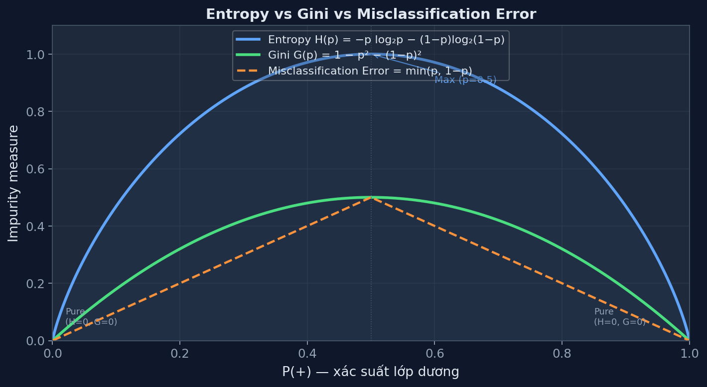
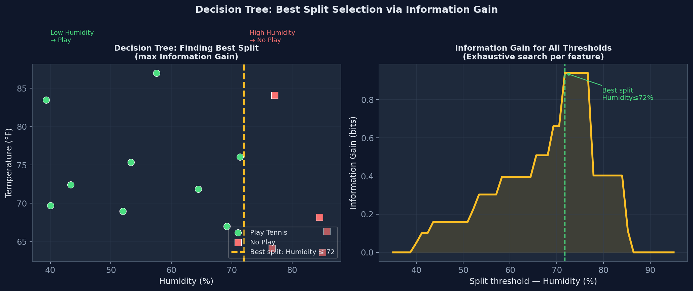

Decision Trees
Học tập tập hợp các quy tắc if-else để phân loại — interpretable, greedy, dễ overfit.
Decision Tree chia không gian đặc trưng thành các vùng chữ nhật (axis-parallel) bằng chuỗi quyết định nhị phân. Mỗi internal node đặt câu hỏi về một đặc trưng; mỗi leaf node cho ra nhãn lớp.
Bạn đang chơi game 20 câu hỏi để đoán một con vật. Câu hỏi tốt là câu loại bỏ tối đa số khả năng cho dù câu trả lời là gì. "Nó có xương sống không?" tốt hơn "Nó có sọc vàng không?" vì câu đầu chia tập thành hai phần gần bằng nhau. Decision Tree làm y hệt: tìm câu hỏi (feature threshold) giảm sự hỗn loạn (impurity) nhiều nhất.
Thành phần cây
- Root node: điểm khởi đầu, xử lý toàn bộ dữ liệu
- Internal node: điều kiện phân chia \(x_j \leq \theta\)
- Branch: nhánh dẫn đến nút con
- Leaf node: dự đoán — nhãn đa số trong node đó
- Depth: độ sâu tối đa từ root đến leaf
Axis-parallel splits
Mỗi điều kiện chỉ dùng một đặc trưng tại một thời điểm:
- Categorical: \(X_j = \text{value}\)
- Continuous: \(X_j \leq \theta\) (ngưỡng)
Kết quả: decision boundary là các đường song song với trục tọa độ — dạng bậc thang trong không gian 2D.
Mục tiêu mỗi lần phân chia là giảm tối đa tạp chất trong các nút con. Ba độ đo phổ biến, cùng đo "mức độ lộn xộn" nhưng bằng cách khác nhau.
- log₂: Đơn vị là bit — số câu hỏi nhị phân tối thiểu cần để mã hóa một lựa chọn. Dùng log₂ cho entropy phân loại là quy ước tiêu chuẩn trong lý thuyết thông tin.
- Dấu âm: \(\log_2 P(\omega_j) \leq 0\) (vì \(P \in [0,1]\)). Dấu âm để H ≥ 0.
- Quy ước: \(0 \cdot \log_2 0 = 0\) (giới hạn khi \(P \to 0\)).
| Tình huống (2 lớp) | P(+) | P(−) | H (bits) | Ý nghĩa |
|---|---|---|---|---|
| Hoàn toàn thuần khiết | 1.0 | 0.0 | 0 | Không cần hỏi gì thêm — chắc chắn 100% |
| Thiên lệch nhẹ | 0.9 | 0.1 | 0.469 | Ít bất định — dễ đoán |
| Thiên lệch vừa | 0.7 | 0.3 | 0.881 | Bất định trung bình |
| Tối đa hỗn độn | 0.5 | 0.5 | 1.0 | Hoàn toàn không biết — cần 1 bit thông tin |
Tung đồng xu: nếu xác suất ngửa = 0.5 (entropy=1), bạn hoàn toàn không chắc kết quả — cần hỏi để biết. Nếu xác suất ngửa = 0.99 (entropy≈0.08), bạn hầu như biết kết quả rồi — không cần hỏi thêm. Entropy đo lượng thông tin còn cần để biết kết quả.

Hình 1 — Entropy và Gini đều đạt max khi P(+)=0.5 (hoàn toàn hỗn hợp) và về 0 khi node thuần khiết. Entropy nhạy hơn với sự không thuần khiết; Gini tính nhanh hơn (tránh log). CART dùng Gini; ID3/C4.5 dùng Entropy.
Gini = xác suất phân loại sai nếu chọn nhãn ngẫu nhiên theo phân phối P của nút đó:
Ví dụ: node có 6 Yes, 4 No → G = 1 − (0.6² + 0.4²) = 1 − (0.36+0.16) = 0.48. Nếu random-guess theo phân phối này, 48% bị sai.
| Độ đo | Khoảng giá trị (2 lớp) | Max tại | Dùng trong | Tốc độ tính |
|---|---|---|---|---|
| Entropy | [0, 1] bit | P=0.5 → 1 bit | ID3, C4.5 | Chậm hơn (log) |
| Gini | [0, 0.5] | P=0.5 → 0.5 | CART, sklearn default | Nhanh hơn (không log) |
| Misclassification | [0, 0.5] | P=0.5 → 0.5 | Ít dùng | Nhanh nhất |
Trong hầu hết thực tế, Entropy và Gini chọn cùng feature để split. Entropy phạt nặng hơn các node hỗn hợp gần 50/50 (đường cong log dốc hơn ở giữa). Gini phạt nặng hơn khi tạp chất đã thấp (đường cong bậc 2 thoải hơn ở 2 đầu). Sự khác biệt thực tế là rất nhỏ.
Tỷ lệ lỗi nếu luôn dự đoán lớp đa số. Ít dùng để xây cây vì đạo hàm thưa (piecewise constant) — không dẫn hướng thuật toán tốt bằng Entropy hay Gini.
| Thành phần | Ý nghĩa |
|---|---|
| \(H(N)\) | Entropy nút cha — mức độ hỗn độn trước khi phân chia |
| \(N_k\) | Nút con thứ k sau khi phân chia theo feature A |
| \(|N_k|/|N|\) | Trọng số — nút con lớn hơn đóng góp nhiều hơn |
| \(\sum_k \frac{|N_k|}{|N|}H(N_k)\) | Entropy sau phân chia — trung bình có trọng số |
| \(\text{IG}\) | Lượng entropy giảm — độ "hiệu quả" của câu hỏi |
Một nút con với 100 điểm có H=0.9 đáng lo ngại hơn nhiều so với nút con 2 điểm có H=0.9. Trọng số \(|N_k|/|N|\) đảm bảo nút lớn được tính nặng hơn — phản ánh đúng thực tế: nếu 99% dữ liệu rơi vào một nút con hỗn loạn, việc phân chia đó không có giá trị.
Nếu "ID khách hàng" là một feature, mỗi ID duy nhất tạo ra một lá thuần khiết → IG(ID) = H(root) = maximum! Nhưng mô hình không học được gì — không tổng quát hóa được cho dữ liệu mới.
Ví dụ: Feature Outlook (3 giá trị) vs Feature ID (14 giá trị duy nhất): IG(ID) >> IG(Outlook) nhưng Outlook thực sự hữu ích hơn.
Split Information
Đo lường feature A "dàn trải" dữ liệu nhiều đến mức nào. Feature với nhiều nhánh đều nhau có SplitInfo cao.
Gain Ratio
IG chia cho SplitInfo → chuẩn hóa theo mức độ phân tán. Feature nhiều nhánh bị phạt vì SplitInfo lớn.
| Feature | IG | SplitInfo | GainRatio |
|---|---|---|---|
| Outlook (3 giá trị) | 0.246 | 1.577 | 0.156 |
| Humidity (2 giá trị) | 0.152 | 1.000 | 0.152 |
| Feature "ID" (14 giá trị) | 0.940 (max!) | 3.807 | 0.247 |
Trong thực tế C4.5 áp dụng thêm: chỉ xét features có IG ≥ average IG, sau đó chọn GainRatio cao nhất trong số đó.
| Day | Outlook | Temperature | Humidity | Wind | PlayTennis |
|---|---|---|---|---|---|
| D1 | Sunny | Hot | High | Weak | No |
| D2 | Sunny | Hot | High | Strong | No |
| D3 | Overcast | Hot | High | Weak | Yes |
| D4 | Rain | Mild | High | Weak | Yes |
| D5 | Rain | Cool | Normal | Weak | Yes |
| D6 | Rain | Cool | Normal | Strong | No |
| D7 | Overcast | Cool | Normal | Strong | Yes |
| D8 | Sunny | Mild | High | Weak | No |
| D9 | Sunny | Cool | Normal | Weak | Yes |
| D10 | Rain | Mild | Normal | Weak | Yes |
| D11 | Sunny | Mild | Normal | Strong | Yes |
| D12 | Overcast | Mild | High | Strong | Yes |
| D13 | Overcast | Hot | Normal | Weak | Yes |
| D14 | Rain | Mild | High | Strong | No |
Tổng kết: 14 records. PlayTennis = 9 Yes (D3,D4,D5,D7,D9,D10,D11,D12,D13), 5 No (D1,D2,D6,D8,D14).
Nút gốc có entropy khá cao (0.940 ≈ 1 bit) vì phân phối lớp gần 2:1. Bây giờ tính IG của mỗi feature để chọn câu hỏi tốt nhất.
IG(Outlook) — Feature 3 giá trị: Sunny / Overcast / Rain
Phân chia theo Outlook:
| Nhánh | Records | Yes | No | Tính H | H |
|---|---|---|---|---|---|
| Sunny | D1,D2,D8,D9,D11 (5) | 2 | 3 | \(-\frac{2}{5}\log_2\frac{2}{5}-\frac{3}{5}\log_2\frac{3}{5}=0.4{\times}1.322+0.6{\times}0.737\) | 0.971 |
| Overcast | D3,D7,D12,D13 (4) | 4 | 0 | \(-1{\cdot}\log_2 1 - 0 = 0\) (thuần khiết!) | 0 |
| Rain | D4,D5,D6,D10,D14 (5) | 3 | 2 | \(-\frac{3}{5}\log_2\frac{3}{5}-\frac{2}{5}\log_2\frac{2}{5}=0.6{\times}0.737+0.4{\times}1.322\) | 0.971 |
IG(Humidity) — Feature 2 giá trị: High / Normal
| Nhánh | Records | Yes | No | H |
|---|---|---|---|---|
| High | D1,D2,D3,D4,D8,D12,D14 (7) | 3 | 4 | \(-\frac{3}{7}\log_2\frac{3}{7}-\frac{4}{7}\log_2\frac{4}{7}=0.524+0.461=0.985\) |
| Normal | D5,D6,D7,D9,D10,D11,D13 (7) | 6 | 1 | \(-\frac{6}{7}\log_2\frac{6}{7}-\frac{1}{7}\log_2\frac{1}{7}=0.191+0.401=0.592\) |
IG(Wind) — Feature 2 giá trị: Weak / Strong
| Nhánh | Records | Yes | No | H |
|---|---|---|---|---|
| Weak | D1,D3,D4,D5,D8,D9,D10,D13 (8) | 6 | 2 | \(-\frac{6}{8}\log_2\frac{6}{8}-\frac{2}{8}\log_2\frac{2}{8}=0.311+0.500=0.811\) |
| Strong | D2,D6,D7,D11,D12,D14 (6) | 3 | 3 | \(-\frac{3}{6}\log_2\frac{3}{6}-\frac{3}{6}\log_2\frac{3}{6}=1.0\) (50/50) |
IG(Temperature) — Feature 3 giá trị: Hot / Mild / Cool
| Nhánh | Records | Yes | No | H |
|---|---|---|---|---|
| Hot | D1,D2,D3,D13 (4) | 2 | 2 | 1.0 (50/50) |
| Mild | D4,D8,D10,D11,D12,D14 (6) | 4 | 2 | \(-\frac{4}{6}\log_2\frac{4}{6}-\frac{2}{6}\log_2\frac{2}{6}=0.390+0.528=0.918\) |
| Cool | D5,D6,D7,D9 (4) | 3 | 1 | \(-\frac{3}{4}\log_2\frac{3}{4}-\frac{1}{4}\log_2\frac{1}{4}=0.311+0.500=0.811\) |
Bảng tổng kết IG tại root node:
| Feature | IG (bits) | Kết quả |
|---|---|---|
| Outlook | 0.246 | ← Chọn làm root! |
| Humidity | 0.152 | |
| Wind | 0.048 | |
| Temperature | 0.029 |
Nhánh Overcast → thuần khiết (4 Yes, 0 No) → Leaf: Yes. Cần đệ quy trên Sunny và Rain.
Nhánh Sunny — D1,D2,D8,D9,D11 (2 Yes, 3 No) → H=0.971
Tính IG cho 3 features còn lại trong tập Sunny:
| Feature | Phân hoạch | H(N_k) | IG |
|---|---|---|---|
| Humidity | High={D1,D2,D8}→0Y3N; Normal={D9,D11}→2Y0N | H(High)=0, H(Normal)=0 | 0.971 − [3/5·0 + 2/5·0] = 0.971 |
| Temperature | Hot={D1,D2}→0Y2N; Mild={D8,D11}→1Y1N; Cool={D9}→1Y0N | 0; 1.0; 0 | 0.971−[2/5·0+2/5·1+1/5·0]=0.571 |
| Wind | Weak={D1,D8,D9}→1Y2N; Strong={D2,D11}→1Y1N | 0.918; 1.0 | 0.971−[3/5·0.918+2/5·1]=0.020 |
Nhánh Rain — D4,D5,D6,D10,D14 (3 Yes, 2 No) → H=0.971
Tính IG cho 3 features còn lại trong tập Rain:
| Feature | Phân hoạch | H(N_k) | IG |
|---|---|---|---|
| Wind | Weak={D4,D5,D10}→3Y0N; Strong={D6,D14}→0Y2N | H(Weak)=0, H(Strong)=0 | 0.971 − [3/5·0 + 2/5·0] = 0.971 |
| Humidity | High={D4,D14}→1Y1N; Normal={D5,D6,D10}→2Y1N | 1.0; 0.918 | 0.971−[2/5·1+3/5·0.918]=0.020 |
| Temperature | Mild={D4,D10,D14}→2Y1N; Cool={D5,D6}→1Y1N | 0.918; 1.0 | 0.971−[3/5·0.918+2/5·1]=0.020 |
Hình 2 — Cây ID3 hoàn chỉnh cho bài toán Play Tennis. 5 leaf nodes, depth=2. Feature Temperature không được dùng vì Information Gain quá thấp.

Hình 3 — Trái: Tập dữ liệu và đường split tốt nhất (Humidity≤72%). Phải: Information Gain cho mọi ngưỡng split — CART tìm kiếm exhaustive qua mọi feature và threshold, chọn split maximise IG (hoặc Gini reduction).
CART (Classification and Regression Trees) khác ID3 ở hai điểm chính:
ID3 / C4.5
- Dùng Entropy / GainRatio
- Multi-way splits (nhiều nhánh cho categorical)
- Không xử lý tốt continuous features
- Chỉ classification
CART (sklearn default)
- Dùng Gini impurity
- Chỉ binary splits (left/right)
- Xử lý continuous: sort + try all midpoints
- Cả classification lẫn regression
Tính Gini cho Outlook split tại root
Gini(root) = \(1 - (9/14)^2 - (5/14)^2 = 1 - 0.413 - 0.128 = 0.459\)
| Nhánh | Yes | No | Gini(N_k) | Trọng số |
|---|---|---|---|---|
| Sunny (5) | 2 | 3 | \(1-(2/5)^2-(3/5)^2=1-0.16-0.36=0.480\) | 5/14 |
| Overcast (4) | 4 | 0 | \(1-1^2-0^2=0\) | 4/14 |
| Rain (5) | 3 | 2 | \(1-(3/5)^2-(2/5)^2=1-0.36-0.16=0.480\) | 5/14 |
So sánh với IG dùng Entropy = 0.246 — giá trị khác nhau nhưng ranking features thường giống nhau. Outlook vẫn là feature tốt nhất khi dùng Gini.
Ví dụ: Feature liên tục Age = [23, 25, 30, 35, 40], target = [No, No, Yes, Yes, Yes]
Candidates: (23+25)/2=24, (25+30)/2=27.5, (30+35)/2=32.5, (35+40)/2=37.5
| Threshold θ | Left (≤θ) | Right (>θ) | Gini Left | Gini Right | Weighted Gini |
|---|---|---|---|---|---|
| θ=24 | {23}→0Y1N | {25,30,35,40}→3Y1N | 0 | 0.375 | 1/5·0+4/5·0.375=0.300 |
| θ=27.5 | {23,25}→0Y2N | {30,35,40}→3Y0N | 0 | 0 | 0 ← minimum! |
| θ=32.5 | {23,25,30}→1Y2N | {35,40}→2Y0N | 0.444 | 0 | 3/5·0.444=0.267 |
| θ=37.5 | {23,25,30,35}→2Y2N | {40}→1Y0N | 0.5 | 0 | 4/5·0.5=0.400 |
Chọn θ=27.5 — hai nhánh đều thuần khiết (Gini=0). Split: Age ≤ 27.5 → No, Age > 27.5 → Yes.
ID3 không có cơ chế dừng sớm — cứ chia cho đến khi mỗi leaf có đúng 1 điểm → training error = 0, nhưng mỗi leaf quá cụ thể để tổng quát. Decision tree là thuật toán có variance cao: thay đổi một điểm dữ liệu có thể làm thay đổi hoàn toàn cấu trúc cây.
| Tham số | Ý nghĩa | Tác dụng |
|---|---|---|
max_depth | Độ sâu tối đa | Giới hạn trực tiếp độ phức tạp cây |
min_samples_split | Số điểm tối thiểu để split nút | Nút nhỏ không được chia tiếp |
min_samples_leaf | Số điểm tối thiểu trong leaf | Tránh leaf quá nhỏ, không đại diện |
min_impurity_decrease | IG tối thiểu để split | Chỉ chia khi thực sự giảm impurity đáng kể |
Định nghĩa cost của cây T với tham số α:
Với α=0: cây đầy đủ (ưu tiên accuracy). Khi tăng α: bị phạt vì có nhiều leaf → prune dần. Dùng cross-validation để chọn α tối ưu:

Hình 4 — Bias-Variance tradeoff: cây quá cạn (underfitting, high bias), quá sâu (overfitting, high variance). Pruning tìm điểm tối ưu giữa hai thái cực. Cross-validation chọn α (cost-complexity) để prune về đúng độ sâu.
Axis-parallel (ID3, CART chuẩn)
Boundary là chuỗi đường thẳng vuông góc với trục — dạng "bậc thang". Hiệu quả cho dữ liệu separable bằng điều kiện đơn.
Oblique splits (nâng cao)
Điều kiện dạng \(w_1x_1+w_2x_2 \leq \theta\) — đường chéo. Cần ít node hơn để phân tách dữ liệu diagonally separable.
Tại mỗi node, ID3 chọn feature tốt nhất tại thời điểm đó mà không nhìn xa hơn. Có thể một feature có IG thấp ở root nhưng lại dẫn đến cây nhỏ hơn tổng thể. Bài toán tìm cây quyết định tối ưu (global) là NP-hard — greedy là heuristic thực tế duy nhất.
| Tiêu chí | Decision Tree | KNN | Naive Bayes | SVM |
|---|---|---|---|---|
| Interpretability | ★★★★★ (nhất) | ★★ | ★★★ | ★ |
| Training speed | O(n·d·n log n) | O(1) | O(n·d) | O(n²–n³) |
| Prediction speed | O(depth) | O(n·d) brute | O(d) | O(n_sv·d) |
| Non-linear boundary | ✅ Staircase | ✅ Voronoi | ❌ Linear (thường) | ✅ Kernel |
| Overfitting risk | ⚠️ Cao (nếu không prune) | ⚠️ K=1 | ✅ Thấp | ✅ Margin lớn |
| Xử lý missing data | ✅ Dễ (C4.5) | ❌ Khó | ✅ Dễ | ❌ Khó |
| Feature importance | ✅ Tự nhiên từ IG | ❌ | ⚠️ Indirect | ⚠️ Weight magnitude |
Decision Tree đơn lẻ: high variance, low bias khi sâu. Ensemble khai thác điểm này:
- Random Forest (Bagging): Trồng nhiều cây sâu (high variance) trên các bootstrap samples → average → giảm variance, giữ bias thấp.
- Gradient Boosting: Trồng cây nông (high bias/low variance) nối tiếp nhau, mỗi cây sửa lỗi của cây trước → giảm bias mà không tăng nhiều variance.
Hiểu Decision Tree = hiểu nền tảng của Random Forest và XGBoost/LightGBM.
| Khái niệm | Công thức | Khi nào bằng 0 | Khi nào max |
|---|---|---|---|
| Entropy H | \(-\sum P_j \log_2 P_j\) | Node thuần khiết (1 lớp) | P đều nhau: H=log₂c |
| Gini G | \(1-\sum P_j^2\) | Node thuần khiết | P=1/c: G=1-1/c |
| Info Gain IG | \(H(N)-\sum\frac{|N_k|}{|N|}H(N_k)\) | Split không giảm entropy | Tất cả nhánh thuần khiết |
| GainRatio | \(\text{IG}/\text{SplitInfo}\) | IG=0 | IG cao, SplitInfo nhỏ |
| SplitInfo | \(-\sum\frac{|N_k|}{|N|}\log_2\frac{|N_k|}{|N|}\) | Chỉ 1 nhánh (no split) | Tất cả nhánh đều nhau |
- ✅ Tính H(node) = \(-\sum P_j \log_2 P_j\)
- ✅ Tính IG = H(parent) − Σ weight·H(child) — nhớ trọng số = |N_k|/|N|
- ✅ Feature có IG cao nhất → chọn làm split tại node đó
- ✅ Overcast → thuần khiết → leaf ngay, không split tiếp
- ✅ Đệ quy: sau khi split, áp dụng lại ID3 trên từng nhánh con với features còn lại
- ✅ Dừng khi: node thuần khiết, không còn feature, hoặc số điểm < min_samples_split
- ✅ Gini và Entropy thường chọn cùng feature — khác giá trị nhưng không khác thứ hạng
- ✅ IG bị bias bởi feature nhiều giá trị → GainRatio (C4.5) sửa bằng cách chia cho SplitInfo